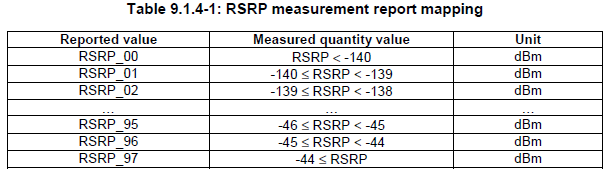

LTE Quick Reference Go Back To Index Home : www.sharetechnote.com
RSRP(Reference Signal Recieved Power)
RSRP is the linear average of reference singal power (in Watts) accorss the specified bandwidth (in number of REs). This is the most important item UE has to measure for cell selection, reselection and handover. You can think of this as the one similar to CPICH RSCP in WCDMA.
Following is an example of one downlink radio frame. The red part is the resource elements in which reference signal is being transmitted. RSRP is the linear average of all the red part power.

Since this measures only the reference power, we can say this is the strength of the wanted signal. But it does not gives any information about signal quality. RSRP gives us the signal strenth of the desired signal, not the quality of the signal. For quality of the signal information another parameter called 'RSSQ' is used in some case.
UE usually measures RSRP or RSRQ based on the direction (RRC message) from the network and report the value. When it report this value, it does use the real RSRP value. It sends a non-negative value ranging from 0 to 97 and each of these values are mapped to a specific range of real RSRP value as shown in the following table from 36.133.
